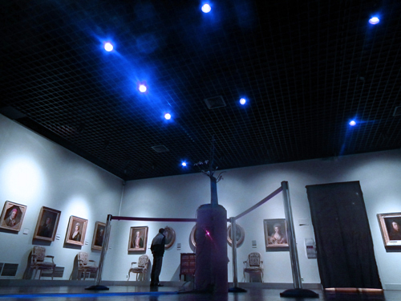
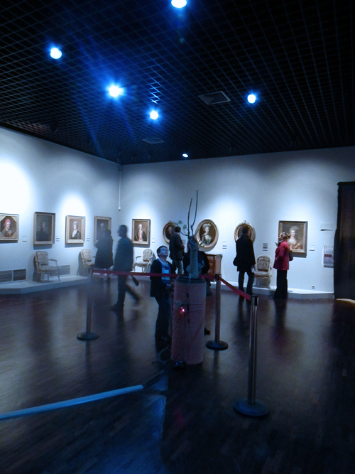

Vue de l'installation, Variation pour montée de sève, François Collin et Sabrina Issa, Musée des Beaux-arts d'Orléans, 2013.
Et si les plantes pouvaient orchestrer un éclairage? Imaginons un instant que la progression de la sève dans un végétal puisse contaminer les conductions électriques et faire varier la teinte et l'intensité lumineuse d'un bâtiment, d'une salle ou même d'une ampoule ? C'est le parti pris de cette pièce. Dans la salle des portraits du Musée des Beaux-arts d'Orléans, « Variation pour une montée de sève » compose l'ambiance lumineuse de l'espace suivant les variations de vitesse de montée de sève dans la plante.
L'accent est porté sur l'aspect «Diva» de la plante. Le socle de la structure est constitué d'une feuille de bois déroulé du Bubinga utiliser couramment en marqueterie, la découpe de ce bois laissant apparaître pleinement les veines et veinures du bois.
Matériaux:
Plante (Bombax ellipticum), structure en métal, bois déroulé iperflex, lampe HUE (x10), montage électronique, capteurs de montée de sève dit de Granier TDP
Dimensions: 90m

Vue de l'installation, Variation pour montée de sève, François Collin et Sabrina Issa, Musée des Beaux-arts d'Orléans, 2013.